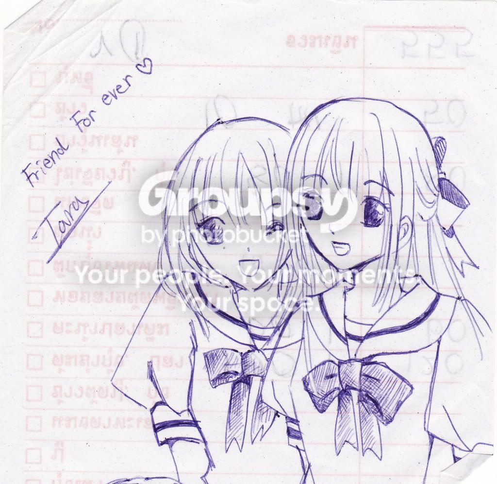
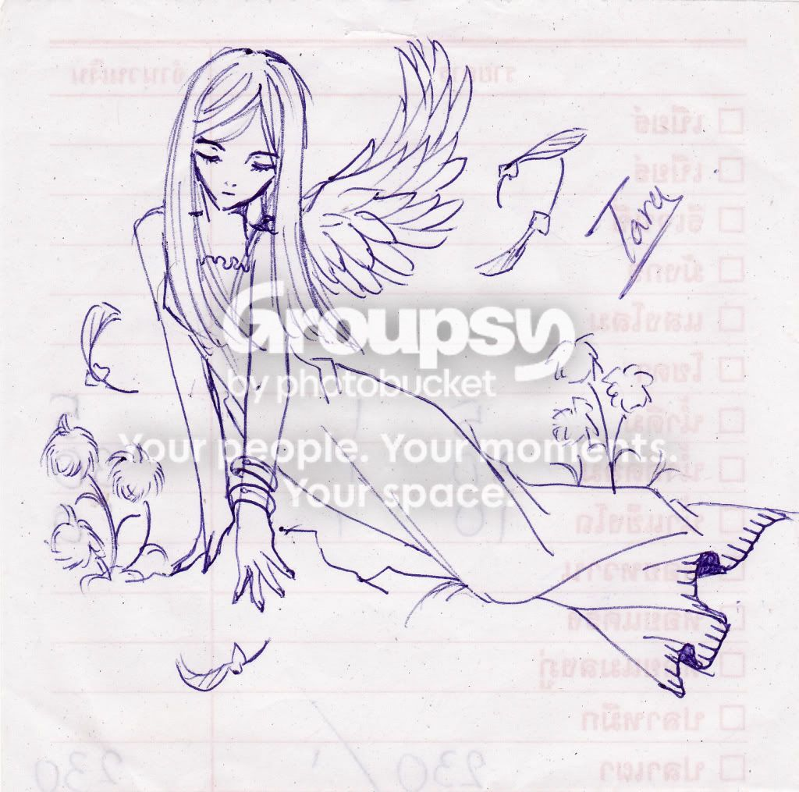

หน้า 3 จากทั้งหมด 5

โพสต์แล้ว:
พุธ 12 พ.ย. 2008 4:01 pmโดย ECO
_Berserk_ เขียน:ดูแล้วมีเอกลักษณ์ดีครับ
เอกลักษณ์ของงานเป็นสิ่งสำคัญ ทำให้เพียงแค่เห็นภาพก็
ทราบว่าใครเป็นคนวาด
"เละๆแบบนี้ใช่เลยฝีมือspiningdeff_source" <<แบบนี้สินะ=w=
โพสต์แล้ว:
พุธ 12 พ.ย. 2008 7:39 pmโดย ECO
อ๊ะ มะก๊้ดูหลายๆรูแสังเกตเห็น วาดในกระดาษบิลสั่งอาการหยอคะ :yoyo110: อะไรจะคอเดียวกันเยย เราก้ชอบวาดในกระดาษรีไซเคิล รดโลกร้อน โย่ว!!
ปล.ว่าแต่แปะรูปไงไม่ให้มันเออเร่ออ่ะคะ พอเราจแปะทีไรมันเออเร่อทุกทีเลยอ่า :yoyo106:
โพสต์แล้ว:
พุธ 12 พ.ย. 2008 8:56 pmโดย ECO
โพสต์ยังไม่ถึง30เท่านั้นเอง
แต่อย่าปั้มนะ มาแต่งนิยายต่อเรื่อยๆก็ลงรูปได้เอง
โพสต์แล้ว:
พฤหัสฯ. 20 พ.ย. 2008 7:52 pmโดย ECO
มาอัพรูปคร่ะ หลังจากไม่ได้อัพมาหลายวัน(หลายอาทิตย์มากกว่ามั้งเทอ =w=")

รูปนี้อยากมอบให้เพื่อนๆที่สนิทๆกันค่ะ เราพยายามวาดให้ภาพมันดูสดใสน๊ะ แต่มันสดจริงมั้ยเนี่ย...(วาดกับปากกาเลยบิดเบี้ยวเยอะ จะแก้ก็ไม่ได้กลัวเลอะ><")

ส่วนภาพนี้ อยากให้ดูเศร้าๆเหมือนรอใครสักคน วาดไปวาดมารู้สึกมันไม่ใช่แล้วค่ะ เอิ้กๆ จริงๆอยากลงรายละเอียดให้มากกว่านี้ค่ะแต่....ขี้คร้านนั่นเอง 55+(เหตุผลช่าง...)
ยังไงๆก็ขอคำแนะนำด้วยนะค่ะ ขอบคุณทุกความเห็นอีกเช่นเคยค่ะ^^b
โพสต์แล้ว:
ศุกร์ 21 พ.ย. 2008 6:27 amโดย ECO
*.* รูปบนน่ารักนะคะ ส่วนรูปล่าง มันไม่รอแล้วค่ะ เราว่าเหมือนจะตายมากกว่า ปีกหลุดไปข้างนึงเลย แล้วท่ามันแปลกๆนะคะ :yoyo98: :yoyo53:
โพสต์แล้ว:
ศุกร์ 28 พ.ย. 2008 9:24 amโดย ECO
:yoyo110: น่ารักมากๆเลยค่ะ
น่าจะลองตัดเส้นลงสีดูบ้างนะคะ
เราว่าคงจะสวยแน่ๆเลยล่ะ ><
แต่ขอตินิดนึงตรงรูปที่3นะคะ
เรื่องสัดส่วนช่วงหน้าอกน่ะค่ะ
มันเบี้ยวๆไปนิดนึงอะค่ะ นอกนั้นโอเคมากๆเลย น่ารักค่ะ ^^
โพสต์แล้ว:
เสาร์ 29 พ.ย. 2008 7:42 pmโดย ECO
โอ๊ะรุปที่ 3 .... รุปไหนหว่า - -"
:yoyo53: ขอบคุณมากค่ะ หน้าอกเบี้ยวสงสัยเสริมซิลิโคนไม่เท่ากัน เอิ้กๆ(เอ้ยไม่ใช่น๊า)
รับทราบคับผม จะทำการปรับปรุงนะค่ะ^^
วาดจนมึนเลยไม่ค่อยรุ้ว่าตัวเองวาดผิดตรงไหนบ้าง
ยังไงๆก็ขอบคุรทุกความคิดเห็นนะค่ะ จุ๊ฟๆ
โพสต์แล้ว:
อาทิตย์ 07 ธ.ค. 2008 6:40 pmโดย ECO
เริ่มได้ดีครับ
เอกลักษณ์ใช้ได้ แต่อาจจะต้องหาเพิ่มอีกนิดนะ
ที่นี้สิ่งที่ต้องปรับปรุง ซึ่งคิดว่า น่าจะรู้ก็คือ
ลายเส้น ที่ต้องให้ดูประณีตกว่านี้ กับ สัดส่วน
เรื่องสัดส่วนนี้ พื้นฐานผ่านแล้วนะ โดยเฉพาะรูปในหน้าแรก ที่เป็นผู้หญิงนั่ง
ทำได้ดีเลยนะ
สู้ๆครับ ^^
โพสต์แล้ว:
พฤหัสฯ. 11 ธ.ค. 2008 8:41 pmโดย ECO

สวัสดีคร่ะ ^^ วันนี้มาอัพรูปตั้ง 1 รุปแหนะ[มันยอดมากเลยเน๊อะ - -"]
ก็แหมๆๆๆๆ

คริๆ ช่างมันเถอะค่ะขอให้ได้บ่น ความสุขน้อยๆของคนโรคจิต(วิปริต)

อยากวาดออกมาให้เหมือนหญิงชาวจีน แต่เพื่อนบอกมาหน้าไม่ให้หย่ะ โอ้ววสงสัยต้องไปซื้อแผ่นงิ้วมาดูแล้วหล่ะค่ะ แถ่งๆๆๆๆๆๆๆๆ 55+
ขอคำติชมด้วยนะค่ะ
(อันที่จรงพยายามวาดเข้มสุดชีวิตแล้วหล่ะค่ะ แต่ตอนแสกนอาจเกิดแอ็กซิเด้น แต่ยังไงๆก็ต้องขอบคุณคุณเพื่อนคนนี้ค่ะ มิเช่นนั้นนู๋คงไม่มีบุญได้เอารูปมาลงค่ะ^^)
โพสต์แล้ว:
ศุกร์ 12 ธ.ค. 2008 6:07 amโดย ECO
น่ารักค่ะ ดูพริ้วๆดี

แต่อย่างว่าแหละ หน้าไม่ให้เนอะ

โพสต์แล้ว:
ศุกร์ 12 ธ.ค. 2008 11:41 pmโดย ECO
รูปที่เหมือนนางฟ้าน่ารักมากๆเลยค่ะ

ดูจากรูปแรกจนรูปหลังๆนี่ฝีมือดีขึ้นเยอะเลย
โพสต์แล้ว:
เสาร์ 13 ธ.ค. 2008 2:00 amโดย ECO
โฮ่~
มีฝีมือนะนี่ จะรอตามผลงานนะค่ะ
โพสต์แล้ว:
เสาร์ 13 ธ.ค. 2008 4:15 pmโดย ECO
รูป2น่าจะเอาแบบว่าเห็น เกงใน แพรมๆด้วยนะ แหะๆ
โพสต์แล้ว:
อาทิตย์ 14 ธ.ค. 2008 8:19 pmโดย ECO
อ่ะจึ๋ย กุงเกงในแพรม :second09:
ไว้วันหลังจะลองวาดดูนะค่ะ เอิก้ๆ
วันนี้ก้มาลงรูปต่อหล่ะค่ะ ยังไม่หยุดบ้าชุดพริ้วๆ ชอบมั๊กๆๆ

ว่าแต่เปลี่ยนชื่อกระทู้ยังไงอ่าค่ะ*-* ทำไม่เป็นอ่า
ยังไงก็ขอบคุณทุกความคิดเห็นนะค่ะ ดีใจจังมีคนเข้ามาดู
โพสต์แล้ว:
อาทิตย์ 14 ธ.ค. 2008 11:15 pmโดย ECO
ออกแบบชุดได้สวยมากเลยครับ